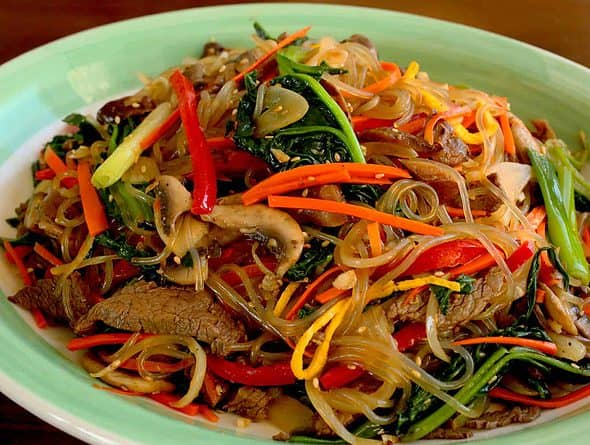

Japchae

Description
Here is how to make japchae:
Ingredients
- 4 ounces beef, filet mignon (or pork shoulder), cut into ¼ inch wide and 2½ inch long strips
- 2 large dried shiitake mushrooms, soaked in warm water for 2 to 3 hours, cut into thin strips
- 2 garlic cloves, minced
- 1 tablespoons plus 2 teaspoons sugar
- 2 tablespoons plus 1 teaspoon soy sauce
- 2 tablespoons toasted sesame oil
- 1 tablespoon toasted sesame seeds
- 1 large egg
- 4 ounces spinach, washed and drained
- 4 ounces of dangmyeon (sweet potato starch noodles)
- 2 to 3 green onions, cut crosswise into 2 inch long pieces
- 1 medium onion (1 cup), sliced thinly
- 4 to 5 white mushrooms, sliced thinly
- 1 medium carrot (¾ cup), cut into matchsticks
- ½ red bell pepper, cut into thin strips (optional)
- ground black pepper
- kosher salt
- vegetable oil
Steps
- Bring a large saucepan of heavily salted water to a boil over high heat. Meanwhile, prepare the vegetables.
- Prepare the following, placing each in a separate pile on a rimmed baking sheet or large plate: Peel 1
medium carrot and cut crosswise into thirds. Cut each piece lengthwise into 1/4-inch thick planks. Stack the
planks and cut lengthwise into 1/4-inch wide matchsticks (about 1 cup). Thinly slice 1/2 medium yellow onion
(about 1 cup). Trim the stems from 4 ounces fresh shiitake mushrooms and thinly slice the caps (about 2
cups). Finely chop 2 garlic cloves and pile on top of the mushrooms.
- Measure out 5 ounces baby spinach if needed (about 5 packed cups). Thinly slice 1 medium scallion if using.
- Add 8 ounces dried Korean sweet potato noodles to the boiling water and stir to separate them. Boil until
cooked through, about 5 minutes. Meanwhile, place 3 tablespoons soy sauce, 2 tablespoons packed dark brown
sugar, and 1/2 teaspoon of the kosher salt in a small bowl and stir until the sugar and salt are dissolved.
- Drain the noodles in a colander and rinse with cold water until cool. Leave in the colander and cut with
kitchen shears into 6 to 8-inch lengths. Drizzle with 1 tablespoon of the sesame oil and toss to coat.
- If using beef, heat 1 tablespoon vegetable oil in a large frying pan (preferably nonstick) over medium heat
until shimmering. Add the beef and spread into an even layer. Let cook undisturbed for 1 minute. Stir-fry
until just cooked through, 30 seconds to 1 minute more. Using tongs, transfer to the colander with the
noodles.
- Heat 1 tablespoon vegetable oil in the same pan (no need to clean) over medium heat until shimmering. (If
not using beef, heat 1 tablespoon vegetable oil in a large frying pan.) Add the carrot, onion, remaining 1/2
teaspoon kosher salt, and 1/4 teaspoon black pepper. Cook, stirring occasionally, until the onion is
softened and starting to brown, 6 to 8 minutes.
- Add the mushrooms and garlic and cook, stirring occasionally and scraping up the browned bits from the
bottom of the pan with a wooden spoon, until the mushrooms are tender, 3 to 4 minutes.
- Add the spinach and cook until mostly wilted, about 2 minutes. Add the reserved noodles, beef, and soy sauce
mixture. Toss until heated through and the noodles are evenly coated in sauce, 2 to 3 minutes.
- Remove the pan from the heat. Drizzle with the remaining 1 tablespoon sesame oil, sprinkle with 1 tablespoon
toasted white sesame seeds, and toss to combine. Taste and season with more kosher salt and black pepper as
needed. Garnish with the scallions and more sesame seeds. Serve warm or at room temperature.